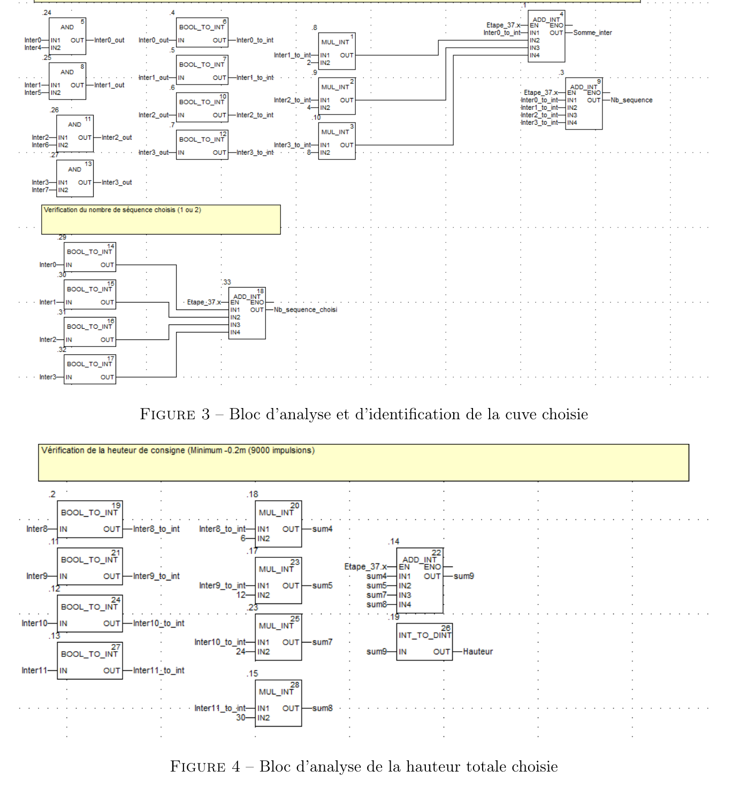
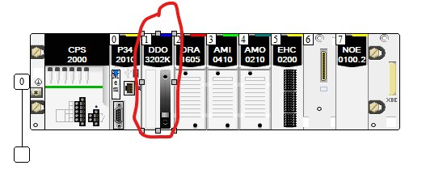
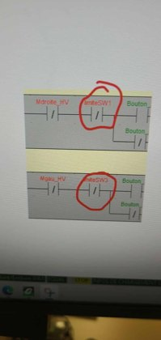
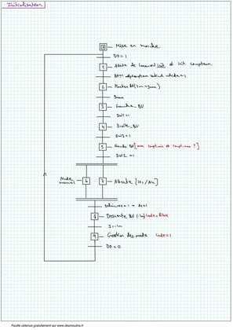
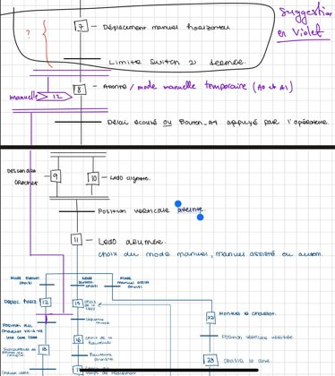
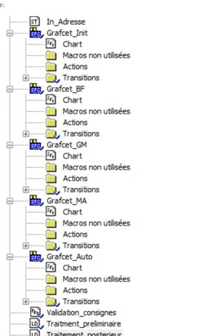
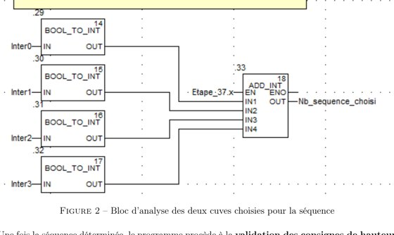
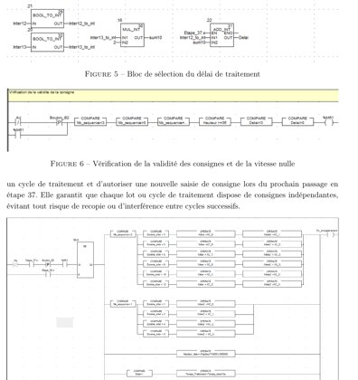

ELE8202 | Fall 2025
Sequential PLC crane automation
Mode management, sequence control and interlocks for a two-axis crane moving between treatment tanks.
- Status
- Team project
- Focus
- Automation
- Tools and methods
- PLC / GRAFCET / Control Expert

Objective
Coordinate horizontal and vertical crane motion through initialization, manual, assisted and automatic modes in an academic industrial-process model.
Engineering work
- Define the operating modes and their transition conditions.
- Structure GRAFCET sequences and modular control logic.
- Validate tank and height setpoints before executing motion.
- Use operator feedback and interlocks to clarify the current machine state.
Outcome
The team report preserves program organization, selection blocks, timing logic and setpoint validation. Handwritten GRAFCET material supplements the report figures.
Scope and limits
This case study describes the academic implementation documented by the team. The native PLC and HMI project exports are not included, and the website does not connect to a live machine.
Engineering workflow
- 01Initialize
- 02Validate setpoints
- 03Sequence motion
- 04Monitor state
Archive gallery 7 items














Evidence and documentation
ELE8202 project 1 team report and archived GRAFCET sheets. Figures are report excerpts, not a live PLC session.